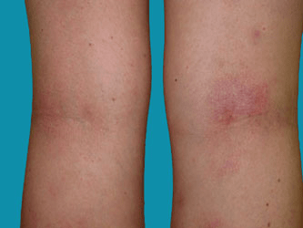

Atopic eczema is an inflammatory condition of the skin. Atopic is the term used to describe conditions such as eczema, asthma,
seasonal rhinitis and hay fever, which often have a genetic basis. Eczema is the term used to describe changes in the upper
layer of the skin that include redness, blistering, oozing, crusting, scaling, thickening and sometimes pigmentation
(although not all of these changes will necessarily occur together). The words eczema and dermatitis are interchangeable
and mean the same thing: thus atopic eczema is the same as atopic dermatitis. For simplicity we shall use atopic eczema
in this leaflet.
Atopic eczema affects both sexes equally and usually starts in the first weeks or months of life. It is most common in children,
affecting at least 10% of infants at some stage. It usually disappears during childhood, although it can carry on into adult
life or come back in the teenage or early adult years. It may occasionally develop for the first time in adulthood.

Treatments for atopic eczema can help to ease the symptoms. There's no cure, but many children find their symptoms naturally improve as they get older.
Emollients are moisturising treatments applied directly to the skin to reduce water loss and cover it with a protective film.
They're often used to help manage dry or scaly skin conditions such as atopic eczema.
In addition to making the skin feel less dry, they may also have a mild anti-inflammatory role, and can help reduce the number of flare-ups you have.
If your skin is sore and inflamed, your GP may prescribe a topical corticosteroid (applied directly to your skin),
which can reduce the inflammation within a few days.
Topical corticosteroids can be prescribed in different strengths, depending on the severity of your atopic
eczema and the areas of skin affected.
They can be:
Antihistamines are a type of medicine that block the effects of a substance in the blood called histamine. They can help relieve
the itching associated with atopic eczema.
They can either be sedating, which cause drowsiness, or non-sedating. If you have severe itching, your GP may suggest
trying a non-sedating antihistamine.
If itching during a flare-up affects your sleep, your GP may suggest taking a sedating antihistamine. Sedating antihistamines
can cause drowsiness into the following day, so it may be helpful to let your child's school know they may not be as alert as normal.
In some cases, your GP may prescribe special medicated bandages, clothing or wet wraps to wear over areas of skin affected by eczema.
These can either be used over emollients or with topical corticosteroids to prevent scratching, allow the skin underneath
to heal, and stop the skin drying out.
Corticosteroid tablets are rarely used to treat atopic eczema nowadays, but may occasionally be prescribed for short
periods of five to seven days to help bring particularly severe flare-ups under control.
Longer courses of treatment are generally avoided because of the risk of potentially serious side effects.
If your GP thinks your condition may be severe enough to benefit from repeated or prolonged treatment with corticosteroid
tablets, they'll probably refer you to a specialist.
Some people may find complementary therapies such as herbal remedies helpful in treating their eczema, but there's little
evidence to show these remedies are effective.
If you're thinking about using a complementary therapy, speak to your GP first to ensure the therapy is safe for you to use.
Make sure you continue to use other treatments your GP has prescribed.